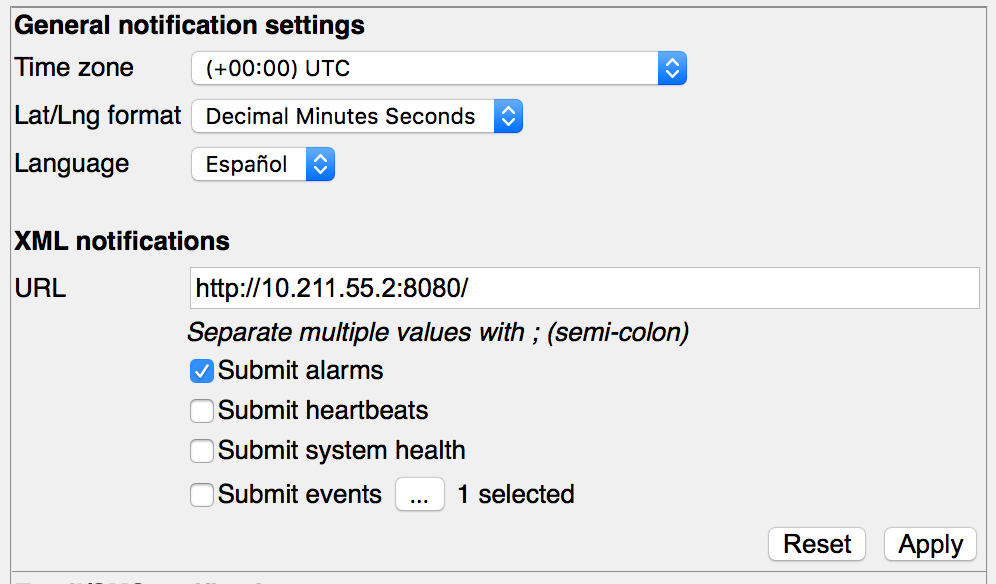
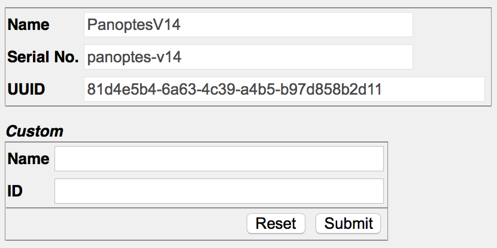
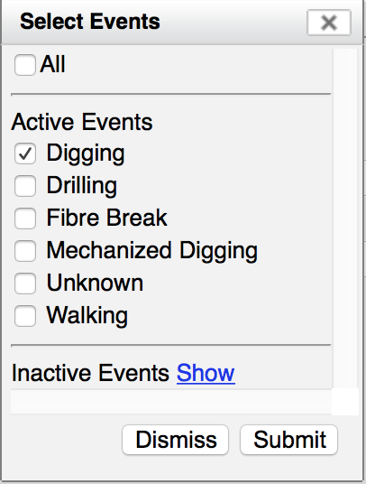

XML Notifications¶
The XML protocol sends XML documents using an HTTP POST protocol to the URLs of your choice. It contains almost as much information as the Web Socket.
Advantages
The main advantage is that XML+HTTP is well defined and well understood. Most likely you will not need to write much “from scratch” but rather will use any of a number of third party packages to provide the necessary HTTP server then write your application code on top of that.
Disadvantages
The main disadvantage is that HTTP POSTs are not as efficient as the Web Socket pushing. In addition XML can be a little harder to deal with than JSON, although there are many libraries available to assist the software developer.
Overall Protocol¶
{kind=link}
The XML protocol uses an HTTP connection to submit Alerts to a third-party server. This is the easiest of the protocols to implement as no binary manipulation is required and any number of off the shelf HTTP server packages can be used to implement the receiver.
In order to use this protocol you need to write an HTTP server that will accept an XML document in an HTTP POST. Then you use the HWI dialogs to configure the Helios unit to post the necessary data to your server.
As of V13.5 we have modified the XML POST to use the chunked-encoding of HTTP 1.1. Depending on how your HTTP server has been written and configured, you may need to modify it to accept this encoding. See https://www.w3.org/ Protocols/rfc2616/rfc2616-sec3.html or https://en.wikipedia.org/wiki/Chunked_transfer_encoding or https:// www.httpwatch.com/httpgallery/chunked/ for technical descriptions of this encoding. In addition, our test script - http_post_viewer - which is available on all Panoptes or Helios units, has been modified to handle this encoding and can be used as an example of Python code for handling HTTP posts.
Configuring¶
Changed in V13.6
There are two screens to be filled in when configuring the XML notifications - one to setup some system identification which will be included in the notifications, and one to configure the notifications themselves. Note that you need to be logged in as a user with “Organization Admin” privileges in order to perform these tasks.
{kind=link}
The first of these is accessed via the “Admin/System identity…” menu item. The top section is filled in by the Fotech staff and is viewable but not editable by you. It consists of a human readable system name and a UUID which will be unique to that Panoptes machine.
The bottom (custom) section will initially be blank and is where you can enter in a name and/or ID that you want to use to identify the Panoptes system. These are optional - if you don’t need them the associated tags will simply be left out of the XML messages.
Changed in V14.2
The second screen is accessed via the “Admin/Notifications…” screen.
The top section contains settings that apply to both XML and Email/SMS notifications. You can specify a time zone, the desired latitude/longitude format, and (if multi-language support has been enabled) the language to be used. Note that these only apply to notifications. In the web browser the times, the lat/long format, and the language selection continue to use the proper browser settings. This setting is needed because we cannot automatically determine the timezone of the XML and Email recipients.
In the next section entitled “XML notifications you will need to enter the URL that you want to post the XML messages to. This URL will need to be able to accept an XML message over HTTP. A sample Python script that can accept these messages is included with your Panoptes system and is described later in this paper in the section “Testing the XML Messages”. Note that you need to include the complete URL including the “http:” and the port number if it is not the default port 80.
{kind=link}
You can specify more than one URL to post to by separating them by the semi-colon “;” character. If desired you can have spaces around the semi-colon character to make it more readable, but that is optional.
Beneath the URL you can select which of the three message types you want to receive: the alarms, the regular heartbeats, the regular system health updates, and/or the fibre events.
If you wish to include the events, you can specify which event types you want to include. To configure this press the “…” button and select the event types you wish to include from the dialog that you will see.
XML Message Common Items¶
Envelope¶
Every XML message generated by Panoptes is wrapped in our standard envelope.:
<?xml version="1.0"?>
<Envelope xmlns="http://www.fotechsolutions.com/envelope">
...
</Envelope>
This envelope is given the namespace “http://www.fotechsolutions.com/envelope”. Note that this is just a namespace, it does not define an xmlSchema. It exists so that if desired you can combine our XML with your own.
Each envelope will contain exactly two children. The first child will be the Identification section described below. The second will be the actual data (e.g. “Heartbeat”, “Event”, etc.) of the message.
Identification¶
Each of our XML messages, regardless of type, includes a consistent identification section. This section includes the information that has been entered in the “System Identity” screen described earlier.:
<Identification>
<Panoptes>
<Name>Voyager Panoptes (Production)</Name>
<UUID>5aa7e841-78b8-45e4-9f37-bfec3924759b</UUID>
<SerialNumber>sn_001</SerialNumber>
</Panoptes>
<Custom>
<Name>Our Local Name</Name>
<ID>our-local-id</ID>
</Custom>
</Identification>
Note that if one of the custom fields has been left blank, the corresponding Name or ID tag will be left out. If both custom fields have been left blank then the entire Custom section will be left out. But regardless of these settings the Panoptes section should always be there and will contain the name and UUID that was configured at the factory.
Some Common Attributes and Elements¶
There are a number of items that you will see repeated in a number of our XML messages. These common items are described next.
id attribute: Any of the XML items that come from our database will include an attribute called “id” which is the primary key of the corresponding record in the database.
New in V13.6
version attribute: As of V13.6 we have added a version attribute to the main data element (e.g. “Heartbeat”, “Alarm”, etc.) of a given XML message. At this point they will all be set to a version of “1.0” and any future changes will be tracked by a change in this number. A change in the minor number (e.g. from “1.0” to “1.1”) will indicate a change that is back-compatible such as adding a new element. A change in the major number (e.g. from “1.0” to “2.0” will indicate a change that is not back-compatible.
UUID: Universally unique identifier. A number of items generate these. These are similar to an “id” except that they are not specific to a given database instance they way a primary key is. Often the UUIDs are values generated by a Helios unit and passed along to any Panoptes units that are interested.
Time: Time attributes are found in a number of places. These are always given in the xs:dateTime format and will be converted to the time zone that was configured in the Admin/Notifications page.
Attributes vs. Content: For some elements (e.g. ThreatLevel) you will see similar content in an attribute and as the contents of the element. (e.g. <ThreatLevel name=”red”>Red</ThreatLevel>) This is done to allow the contents to be internationalized while leaving the attribute unchanged for reliable computer parsing. (e.g. assuming the language is set to Español, <ThreatLevel name=”red”>Rojo</ThreatLevel>.)
XML Messages Types¶
Heartbeats¶
Heartbeats are sent out by the Panoptes system so long as the system and its main communications are healthy. On the web browsers you can see the small heart icon in the bottom right corner of the screen pulse each time a heartbeat is received. If heartbeats are not received within a certain amount of time you will see the icon change to a broken heart and the browser comms will disconnect and try to reconnect to the server. Typically this occurs if the server goes down.
The XML version of the heartbeats will be sent out if a valid URL has been given and if “Submit heartbeats” has been selected on the notifications admin page. A typical XML heartbeat will look like the following. Note that for brevity we do not repeat the entire “Identification” section described above.:
<?xml version='1.0'?>
<Envelope xmlns='http://www.fotechsolutions.com/envelope'>
<Identification>...</Identification>
<Heartbeat version='1.0'>
<Time>2013-02-26T11:01:32Z</Time>
</Heartbeat>
</Envelope>
System Health¶
System health messages are sent out at regular intervals as well as whenever a change in the health has been detected. The details of a system health message vary based on the optional components that have been configured in your system. All systems will include “panoptes” and “helios” component types in these messages. Optional component types that you may see include “cabinet” which can report on cabinet temperatures (assuming appropriate hardware was included in your installation) and “comms” which can report on the health of the network switches and the existence of valid network paths between components (assuming appropriate network switches were included in your installation - not all switches have this ability).
The SystemHealth section will include the time of the report (in the same format as described for the Heartbeat message) followed by a list of the monitored components of the system. Each component will contain a “type” tag as described above, the name of the component - which will be the name that is displayed in the portal UI, and an “IsHealthy” tag which will either be “TRUE” or “FALSE”. In the case where this is “FALSE” there will generally be a “Message” tag with a short description of the problem.:
<?xml version='1.0'?>
<Envelope xmlns='http://www.fotechsolutions.com/envelope'>
<Identification>...</Identification>
<SystemHealth version='1.0'>
<Time>2013-02-26T11:18:03Z</Time>
<Component type='panoptes'>
<Name>Panoptes</Name>
<IsHealthy>TRUE</IsHealthy>
</Component>
<Component type='helios'>
<Name>Local DEV</Name>
<IsHealthy>FALSE</IsHealthy>
<Message>Not responding</Message>
</Component>
</SystemHealth>
</Envelope>
Alarms¶
General Alarm Description
Alarms are sub-divided into two alarm types. System alarms are generated when there is a physical problem with the system, such as a component that is not responding. These will generally correspond with a “FALSE” healthy setting in the system health messages. Disturbance alarms are generated when our Helios units detect something along the fibre. This includes both fibre breaks as well as event detection such as “digging” and “vehicle” movement. The XML messages for both are similar, with some differences in the actual alarm details.
Within the Alert tag, each XML message will include Type, Time and Status. These will be followed by a Details section which will differ based on the type of the alert and a History section showing the history of the alert.
Type: The Type tag includes a “name” attribute identifying the name of the alert type. In the contents portion of the tag will be the english readable description of this name, but the name attribute is really the only one you need to examine. For system alarms this will correspond to the name of the component type as specified in the system health messages, for example “panoptes” or “helios”. For event based alarms this will consist of the name of the event followed by “_alert”, for example, “digging_alert”.
Status: The Status tag will show the current status of the alarm. This will be either “New” (the alarm has been received but neither acknowledged nor resolved), “Acknowledged” (the alarm has been recognized by the operator, but still has not been resolved) or “Resolved” (the alarm condition has stopped).:
<?xml version='1.0'?> <Envelope xmlns='http://www.fotechsolutions.com/envelope'> <Identification>...</Identification> <Alert id='813'> <Time>2013-02-26T11:39:01Z</Time> <Type name='digging_alert'>Digging Detected</Type> <Status>Resolved</Status> <ThreatLevel name='red'>Red</ThreatLevel> <Comments>Turned out to be a farmer with a backhoe. No actual threat.</Comments> <Location> <Geospatial> <Latitude>19.7400949120483</Latitude> <Longitude>74.6939082474443</Longitude> </Geospatial> <OnFibre> <FibreLine id="123">London to Reading</FibreLine> <Helios id="123" channel="1">Helios 1 (London Switch A1)</Helios> <Distance units="m">183.654</Distance> </OnFibre> <OnRoute> <Route id="25">London-Reading</Route> <Marker>Paddington Station</Marker> <Distance units="m">16630.177515</Distance> <DirectionOfTravel>W</DirectionOfTravel> <Velocity units="m/s">10.355030</Velocity> <Acceleration units="m/s2">0.123274</Acceleration> </OnRoute> </Location> <Details> <Property id='1001' key='alert-source'>Local DEV</Property> <Property id='1002' key='event_type'>Digging</Property> <Property id='1003' key='position'>6036m</Property> <Property id='1004' key='fibre_line_name'>LONI (52km)</Property> </Details> <History> <Received id='20001' time='2013-02-26T11:39:01Z'/> <Confirmed id='20011' time='2013-02-26T11:39:47Z'/> <Acknowledged id='20015' time='2013-02-26T11:39:56Z' user='steve'> <Comments>I see the problem.</Comments> </Acknowledged> <Resolved id='20023' time='2013-02-26T11:42:22Z'/> </History> </Alert> </Envelope>Threat Level: The current threat level of this alarm. This will include an attribute with the name of the level (e.g. ‘red’) and with the contents being the more readable name (e.g. ‘Red’).
Comments: An alarm may have generic comments added either automatically by the system or manually by an operator. If present, these will be shown as the content of the comments element.
Location: Not all alarms include location information. Event based alarms (e.g. “digging_alert”) will always have a location, and a Helios may if the unit has been configured to report a location. If a location is applicable, it may be described in two different ways.
Geospatial: If the Panoptes has been configured to compute geospatial calibrations, this section will be included. It specifies the latitude and longitude of the event.
OnFibre: This section describes the position of the event along the fibre line. It includes the name and ID of the fibre line, the helios unit and channel (that’s the MUX channel for systems that contains MUX hardware, otherwise it will always be 1), and the distance in metres along the fibre.
OnRoute (New in V14.2): If the Panoptes has been configured with route calibrations, this section will be included. It specifies the position and movement of the event along a specified route. This includes the name of the route, the name of the marker (the zero position of the route), this distance on the route, the direction of travel, the velocity and acceleration of the event along the route.
Alarm Details
The details section will include details related to the type of alarm that has been received. All of the details are contained in “Property” tags which contain a “key” attribute and the value as the contents of the tag.
For a description of the various details, and what type of alarms may include them, see Appendix: Alarm and Event Types.
Alarm History
The final “History” section describes the history of the alarm. This section will grow as the alarm continues. When the alarm is first detected a “Received” tag will be added to the history which should have the same time as the “Time” tag in the main Alert section.
Event based alarms will also typically have “Confirmed” tags throughout their history. These are added a fairly regular intervals so long as the Helios unit is still detecting the underlying events. Not every underlying event will cause a new “Confirmed” tag, they are grouped in order to avoid growing this section too quickly. (Note that it is also possible that the first XML for an event based alarm will have both a “Received” and a “Confirmed” tag as often the confirmation is determined before the first XML message is sent out.)
Another tag you may see in the history is an “Acknowledged” tag. These tags are added if an operator manually acknowledges the receipt of an alarm. (Note that acknowledgement is not required in all setups so in many installations you may never see this tag.) In addition to the time of the acknowledgement, this tag will give the userid of the user who performed the acknowledgement and the comments (if any) that they entered at that time. At this time the status of the alarm will also change from “New” to “Acknowledged”.
Sooner or later the alarm will be resolved. At this time a “Resolved” tag will be added to the history and the alarm status will change to “Resolved”. If the alarm resolved itself (e.g. the underlying events are no longer detected, or a failed component has been replaced) then this tag will only contain the time of the resolution. If it was manually resolved by an operator, then the username and any optional comments they added will also be included in this tag. (Note that for most alarms you should allow them to resolve automatically. If you resolve most alarms manually, a new alarm of that type will be generated - assuming that the physical condition triggering the alarm still exists.)
It is possible that some custom installations will contain history messages in addition to those found here. These would be based on the custom changes described in your contract and the specific details would be given to you separately from this document.
Events¶
New in V13.6
General Event Description
Events are issued in response to disturbance alarms generated when Helios units detect something along the fibre. This includes both fibre breaks as well as event detection such as “digging” and “vehicle” movement.:
<?xml version="1.0"?>
<Envelope xmlns="http://www.fotechsolutions.com/envelope">
<Identification>...</Identification>
<Event id="813" version="1.0">
<Time>2015-12-14T08:45:26.460-07:00</Time>
<Type id="123" name="train" confidence="0.612821">Train Detected</Type>
<Details>
<Track id="12345" uuid="68339765-d247-430d-ac4a-3018c515058a"/>
<Magnitude>148.698</Magnitude>
<Width units="m">51.78227</Width>
<Velocity units="m/s">45.2</Velocity>
<Acceleration units="m/s2">0.01</Acceleration>
</Details>
<Location>
<Geospatial>
<Latitude>19.7400949120483</Latitude>
<Longitude>74.6939082474443</Longitude>
</Geospatial>
<OnFibre>
<FibreLine id="123">London to Surrey</FibreLine>
<Helios id="123" channel="1">Helios 1 (London Switch A1)</Helios>
<Distance units="m">183.654</Distance>
</OnFibre>
<OnRoute>
<Route id="123">WTL SRY</Route>
<Marker id="123">WTL Switch A1</Marker>
<Distance units="m">5083.5</Distance>
<DirectionOfTravel>NE</DirectionOfTravel>
<Velocity units="m/s">45.2</Velocity>
<Acceleration units="m/s2">0.01</Acceleration>
</OnRoute>
</Location>
<Tags>
<Tag id="123" key="custom-key" units="unit">Value</Tag>
</Tags>
</Event>
</Envelope>
Within the Event tag, each XML message will include elements describing the type of the event, the specific details (e.g. magnitude, width, etc.) of the event, the location of the event, and additional optional tags related to the event.
Type: The Type tag includes a “name” attribute identifying the name of the event. In the contents portion of the tag will be the english readable description of this name, but the name attribute is really the only one you need to examine. Additional properties are included to identify Panoptes’ confidence in the event classification and a unique identifier for this type.
Details: The event details include a track id which refers to an event track. Specifically events with the same track uuid are considered to be part of the same physical disturbance, for example, a vehicle moving along a road. The magnitude gives an indication of the “loudness” of the event compared to other events of the same type. And the width, velocity and acceleration describe the size and movement of the event along the fibre.
Location: The location of the event is described. This section is the same as the Location section described above for the Alert messages.
Tags. Finally, an event may contain a number of tags which are reported as key/value pairs. There are a few tags that may be seen automatically, but for the most part these are populated by custom code added on a per-customer basis.
For more information including a list of all the possible event types, event details and event tags, see the chapter Appendix: Alarm and Event Types.
Testing the XML Messages¶
Installed on every Panoptes (and Helios) system is a Python script that echoes any HTTP POST message that it receives. It provides a useful means of testing the XML posting of a Panoptes unit. When you run it you must specify the port it will listen to on the command line, for example, “http_post_viewer 8081”. Then you enter the IP address and port number of the machine that you are running it on in the URL fields of the Reporting tab described earlier. (http:// 10.255.254.165:8081/ in my test case). As messages are generated you will see them echoed by this program. (This is also a good way for you to see exactly what it is that the Panoptes unit sends for a given message.)
You can find the script in the /usr/local/Fotech/bin directory of any Panoptes or /opt/Fotech/helios/bin directory of any Helios unit. Feel free to copy this to any machine you like and to use it for any purpose that you like, but do not modify the version that is on the Panoptes or Helios unit itself.